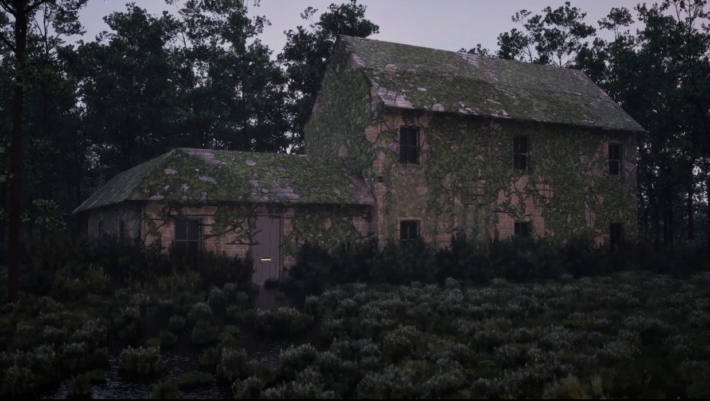

Project
Cottage Environment
An atmospheric, overgrown cottage scene focused on mood, storytelling, and rich natural detail.
Overview
The cottage environment explores a moody woodland setting full of foliage, texture variation, and a haunted sense of stillness. The composition is built to feel alive while preserving a quiet, cinematic tone.
Production
Key focus was on creating believable natural clutter and a restrained lighting palette that reinforced the environment's atmosphere. The end result is a scene rooted in calm tension and strong visual storytelling.
Return to Projects